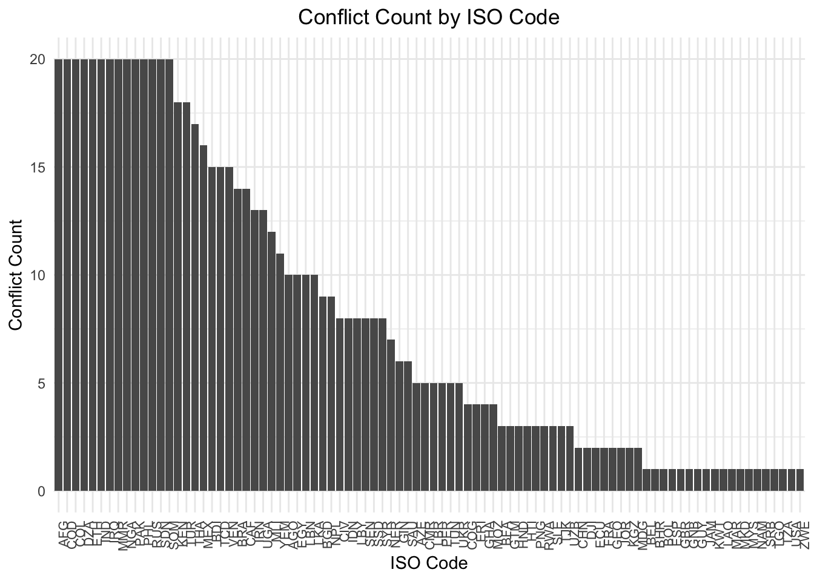
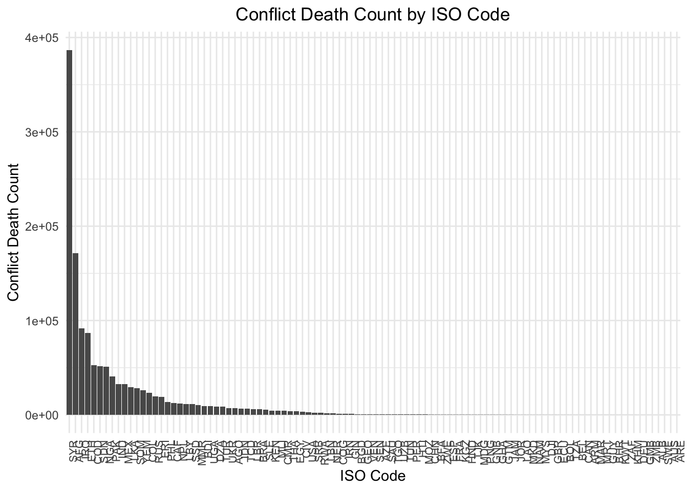

country_name ISO region gdp1000 OECD OECD2023
1 Ecuador ECU Latin America and the Caribbean 1.451531 0 0
2 Ecuador ECU Latin America and the Caribbean 1.904814 0 0
3 Ecuador ECU Latin America and the Caribbean 2.184209 0 0
4 Ecuador ECU Latin America and the Caribbean 2.438344 0 0
5 Ecuador ECU Latin America and the Caribbean 2.703566 0 0
6 Ecuador ECU Latin America and the Caribbean 3.014310 0 0
7 Ecuador ECU Latin America and the Caribbean 3.340841 0 0
8 Ecuador ECU Latin America and the Caribbean 3.579032 0 0
9 Ecuador ECU Latin America and the Caribbean 4.260433 0 0
10 Ecuador ECU Latin America and the Caribbean 4.240703 0 0
11 Ecuador ECU Latin America and the Caribbean 4.640246 0 0
12 Ecuador ECU Latin America and the Caribbean 5.202656 0 0
13 Ecuador ECU Latin America and the Caribbean 5.678456 0 0
14 Ecuador ECU Latin America and the Caribbean 6.050355 0 0
15 Ecuador ECU Latin America and the Caribbean 6.374631 0 0
16 Ecuador ECU Latin America and the Caribbean 6.130587 0 0
17 Ecuador ECU Latin America and the Caribbean 6.079089 0 0
18 Ecuador ECU Latin America and the Caribbean 6.246404 0 0
19 Ecuador ECU Latin America and the Caribbean 6.321349 0 0
20 Ecuador ECU Latin America and the Caribbean 6.233258 0 0
popdens urban agedep male_edu temp rainfall1000 Year Totdeath
1 23.27432 36.19963 67.44216 7.738627 19.54855 1.4201653 2000 0
2 23.39372 36.67994 66.57356 7.843942 19.66622 1.1667746 2001 0
3 23.52087 37.08903 65.65488 7.949449 20.24695 1.4577981 2002 2
4 23.58358 37.23792 64.71472 8.055240 20.05016 1.5781807 2003 0
5 38.43743 37.39268 63.78049 8.161433 20.10136 1.0683450 2004 26
6 38.55361 37.36968 62.86530 8.268176 19.88163 0.8555447 2005 0
7 38.65018 37.47567 61.97042 8.375587 20.07087 1.1114502 2006 0
8 38.76505 37.68172 61.11422 8.483729 19.49536 1.0899082 2007 0
9 38.83977 37.67445 60.31015 8.592603 19.85711 1.6184816 2008 0
10 38.92613 37.39437 59.55262 8.702180 20.39298 1.0870796 2009 25
11 39.03066 37.26838 58.83793 8.812409 20.11160 1.7045703 2010 0
12 39.09586 37.61553 58.16553 8.923172 19.86633 1.4518388 2011 0
13 39.13343 38.00733 57.51051 9.034284 20.19000 1.7520003 2012 0
14 39.18619 38.22511 56.84804 9.145523 19.85177 1.3735605 2013 0
15 39.27871 38.12421 56.17001 9.256679 20.42252 1.2572257 2014 0
16 39.38824 38.15633 55.46511 9.367582 20.95595 1.7284273 2015 0
17 39.46201 38.45745 54.73369 9.478071 20.77476 1.3168761 2016 0
18 39.53609 38.65993 53.99096 9.587993 20.53262 1.9544485 2017 0
19 39.58380 38.87253 53.12249 9.697221 20.53714 1.9573265 2018 0
20 39.75109 39.05144 52.29278 9.805670 20.54169 1.9602443 2019 0
Conflict MatMor NeoMor InfMor Und5Mor drought earthquake
1 0 122 14.1 24.7 29.5 0 0
2 0 117 13.4 23.4 28.0 0 0
3 0 110 12.7 22.4 26.6 0 0
4 0 100 12.1 21.5 25.4 0 0
5 1 94 11.6 20.7 24.4 0 0
6 0 94 11.1 19.9 23.5 0 0
7 0 90 10.6 19.2 22.6 0 0
8 0 85 10.2 18.5 21.7 0 0
9 0 82 9.7 17.7 20.8 0 0
10 1 80 9.3 17.0 19.9 1 0
11 0 78 8.9 16.3 19.0 0 0
12 0 76 8.5 15.6 18.1 0 0
13 0 71 8.1 14.9 17.3 0 0
14 0 67 7.8 14.3 16.6 1 0
15 0 65 7.5 13.7 15.9 0 1
16 0 63 7.3 13.2 15.4 0 0
17 0 61 7.1 12.8 14.8 0 2
18 0 59 6.9 12.4 14.4 0 0
19 0 NA 6.9 12.0 13.9 0 0
20 0 NA 6.8 11.6 13.4 0 2
Exploratory data analysis
Use the rest of the class time to explore the final data that will be used for analysis starting next week. At the end of the class, write a summary of your findings and push your Quarto document (pdf) to your repo.
3720 rows by 21 columns Data types include: 3 character, 8 integer, and 10 numerical
# Data shows 186 countries each with 20 rowsFinal_data %>%count(ISO)
ISO n
1 AFG 20
2 AGO 20
3 ALB 20
4 AND 20
5 ARE 20
6 ARG 20
7 ARM 20
8 ATG 20
9 AUS 20
10 AUT 20
11 AZE 20
12 BDI 20
13 BEL 20
14 BEN 20
15 BFA 20
16 BGD 20
17 BGR 20
18 BHR 20
19 BHS 20
20 BIH 20
21 BLR 20
22 BLZ 20
23 BOL 20
24 BRA 20
25 BRB 20
26 BRN 20
27 BTN 20
28 BWA 20
29 CAF 20
30 CAN 20
31 CHE 20
32 CHL 20
33 CHN 20
34 CIV 20
35 CMR 20
36 COD 20
37 COG 20
38 COL 20
39 COM 20
40 CPV 20
41 CRI 20
42 CUB 20
43 CYP 20
44 CZE 20
45 DEU 20
46 DJI 20
47 DMA 20
48 DNK 20
49 DOM 20
50 DZA 20
51 ECU 20
52 EGY 20
53 ERI 20
54 ESP 20
55 EST 20
56 ETH 20
57 FIN 20
58 FJI 20
59 FRA 20
60 FSM 20
61 GAB 20
62 GBR 20
63 GEO 20
64 GHA 20
65 GIN 20
66 GMB 20
67 GNB 20
68 GNQ 20
69 GRC 20
70 GRD 20
71 GTM 20
72 GUY 20
73 HND 20
74 HRV 20
75 HTI 20
76 HUN 20
77 IDN 20
78 IND 20
79 IRL 20
80 IRN 20
81 IRQ 20
82 ISL 20
83 ITA 20
84 JAM 20
85 JOR 20
86 JPN 20
87 KAZ 20
88 KEN 20
89 KGZ 20
90 KHM 20
91 KIR 20
92 KOR 20
93 KWT 20
94 LAO 20
95 LBN 20
96 LBR 20
97 LBY 20
98 LCA 20
99 LKA 20
100 LSO 20
101 LTU 20
102 LUX 20
103 LVA 20
104 MAR 20
105 MDA 20
106 MDG 20
107 MDV 20
108 MEX 20
109 MHL 20
110 MKD 20
111 MLI 20
112 MLT 20
113 MMR 20
114 MNE 20
115 MNG 20
116 MOZ 20
117 MRT 20
118 MUS 20
119 MWI 20
120 MYS 20
121 NAM 20
122 NER 20
123 NGA 20
124 NIC 20
125 NLD 20
126 NOR 20
127 NPL 20
128 NZL 20
129 OMN 20
130 PAK 20
131 PAN 20
132 PER 20
133 PHL 20
134 PNG 20
135 POL 20
136 PRI 20
137 PRK 20
138 PRT 20
139 PRY 20
140 QAT 20
141 ROU 20
142 RUS 20
143 RWA 20
144 SAU 20
145 SDN 20
146 SEN 20
147 SGP 20
148 SLB 20
149 SLE 20
150 SLV 20
151 SOM 20
152 SRB 20
153 SSD 20
154 STP 20
155 SUR 20
156 SVK 20
157 SVN 20
158 SWE 20
159 SWZ 20
160 SYC 20
161 SYR 20
162 TCD 20
163 TGO 20
164 THA 20
165 TJK 20
166 TKM 20
167 TLS 20
168 TON 20
169 TTO 20
170 TUN 20
171 TUR 20
172 TZA 20
173 UGA 20
174 UKR 20
175 URY 20
176 USA 20
177 UZB 20
178 VCT 20
179 VEN 20
180 VNM 20
181 VUT 20
182 WSM 20
183 YEM 20
184 ZAF 20
185 ZMB 20
186 ZWE 20
Final_data %>%count(ISO) %>%count(n)
Storing counts in `nn`, as `n` already present in input
ℹ Use `name = "new_name"` to pick a new name.
n nn
1 20 186
#Plotting conflicts by ISO Code (only for countries with minimum 1 conflict)conflict_data <- Final_data %>%group_by(ISO) %>%summarise(total_conflicts =sum(Conflict, na.rm =TRUE)) %>%filter(total_conflicts >0) %>%arrange(desc(total_conflicts))conflict_data
# A tibble: 88 × 2
ISO total_conflicts
<chr> <int>
1 AFG 20
2 COD 20
3 COL 20
4 DZA 20
5 ETH 20
6 IND 20
7 IRQ 20
8 MMR 20
9 NGA 20
10 PAK 20
# ℹ 78 more rows
#Plotting deaths by ISO Code (only for countries with minimum 1 conflict related death)death_data <- Final_data %>%group_by(ISO) %>%summarise(total_deaths =sum(Totdeath, na.rm =TRUE)) %>%filter(total_deaths >0) %>%arrange(desc(total_deaths))death_data
# A tibble: 100 × 2
ISO total_deaths
<chr> <int>
1 SYR 386891
2 AFG 171391
3 IRQ 91429
4 ETH 87066
5 COD 52492
6 SDN 51355
7 NGA 51114
8 PAK 40789
9 IND 32704
10 MEX 32686
# ℹ 90 more rows
# Create the plot for conflictggplot(conflict_data, aes(x =reorder(ISO, -total_conflicts), y = total_conflicts)) +geom_bar(stat ="identity") +labs(title ="Conflict Count by ISO Code", x ="ISO Code", y ="Conflict Count") +theme_minimal() +theme(axis.text.x =element_text(angle =90, hjust =1, size =8),plot.title =element_text(hjust =0.5) )

# Create the plot ggplot(death_data, aes(x =reorder(ISO, -total_deaths), y = total_deaths)) +geom_bar(stat ="identity") +labs(title ="Conflict Death Count by ISO Code", x ="ISO Code", y ="Conflict Death Count") +theme_minimal() +theme(axis.text.x =element_text(angle =90, hjust =1, size =8),plot.title =element_text(hjust =0.5))

conflict_summary <- Final_data %>%group_by(Year, Conflict) %>%summarise(mean =mean(Totdeath, na.rm =TRUE), .groups ='drop')ggplot(conflict_summary, aes(x = Year, y = mean, color =as.factor(Conflict), group = Conflict)) +geom_line(alpha =0.7, size =1) +geom_point() +labs(title ="Conflict Related Deaths by Year Grouped by Conflict Status",x ="Year",y ="Total Deaths",color ="Conflict Status") +theme_minimal() +scale_color_manual(values =c("0"="red", "1"="blue")) +theme(plot.title =element_text(hjust =0.5))
Warning: Using `size` aesthetic for lines was deprecated in ggplot2 3.4.0.
ℹ Please use `linewidth` instead.